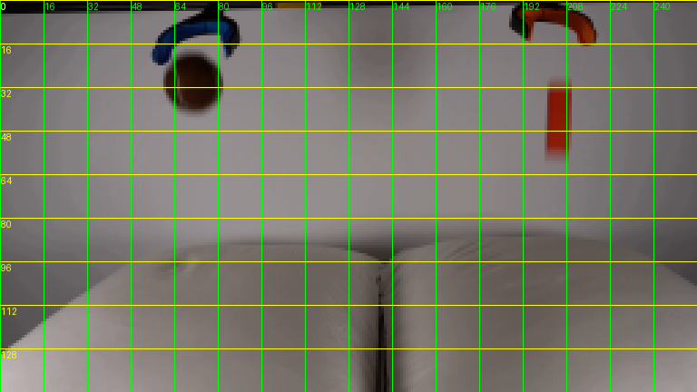
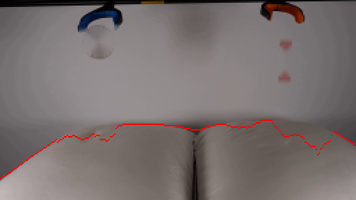
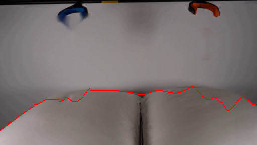

CODING AGENTS AS PIXEL WORLD MODELS
traex/Seed-2.1-Pro-0915 · 0002
尚未保存可播放视频
Static locked-off single-shot with fixed frame throughout filmed with constant framerate in real-time. The scene shows a realistic scientific demonstration. The scene only contains the described setup and actions. Two pillows are on a table and two grabber tools are positioned above them. The grabber tools release the brown tennis ball and the orange block.
failed逐轮保存的候选
回放视频、检查图与代码变化。
每份候选均可单独播放。实际图片检查记录在下方工具轨迹中。
可观测工具轨迹
实际执行的命令与返回图片。
命令 1exit 0
/bin/bash -lc 'cat prompt.txt GENERATION_RULES.md; ls -la'
命令 2exit 0
/bin/bash -lc "cat artifact_io.py; python3 -c \"from PIL import Image; im=Image.open('first_frame.png'); print(im.size, im.mode)\""命令 3exit 1
/bin/bash -lc "cd . && python3 - <<'EOF'
import numpy as np
from PIL import Image
im = np.array(Image.open('first_frame.png'))
print(im.shape)
# find brown ball pixels
r,g,b = im[:,:,0].astype(int), im[:,:,1].astype(int), im[:,:,2].astype(int)
ball = (r>60)&(r<120)&(g>30)&(g<80)&(b<60)&(r>g+15)&(g>=b)
ys,xs = np.where(ball)
print('ball bbox', xs.min(), xs.max(), ys.min(), ys.max(), 'count', ball.sum())
block = (r>150)&(g>40)&(g<110)&(b<60)
ys,xs = np.where(block)
print('block bbox', xs.min(), xs.max(), ys.min(), ys.max(), 'count', block.sum())
# sample wall colors around
for (x,y) in [(10,10),(128,50),(250,80),(128,130),(40,60),(200,30)]:
print((x,y), im[y,x])
EOF"命令 4exit 1
/bin/bash -lc "cd . && python3 - <<'EOF'
import numpy as np
from PIL import Image
im = np.array(Image.open('first_frame.png'))
r,g,b = im[:,:,0].astype(int), im[:,:,1].astype(int), im[:,:,2].astype(int)
# ball: dark brown
ball = (r<110)&(g<75)&(b<60)&(r>g+10)
ys,xs = np.where(ball)
print('ball bbox', xs.min(), xs.max(), ys.min(), ys.max(), 'count', ball.sum())
# orange block: bright orange/red, exclude grabber top region by looking at right side
block = (r>150)&(g>30)&(g<120)&(b<70)
ys,xs = np.where(block)
print('orange bbox', xs.min(), xs.max(), ys.min(), ys.max(), 'count', block.sum())
# block likely x>190
m = block & (np.indices(block.shape)[1]>190) & (np.indices(block.shape)[0]>20)
ys,xs = np.where(m)
print('block bbox', xs.min(), xs.max(), ys.min(), ys.max(), 'count', m.sum())
# sample colors
for (x,y) in [(70,30),(72,25),(205,40),(200,45),(128,70),(128,120),(10,140),(250,140),(128,10)]:
print((x,y), im[y,x])
# pillow top edge: find where light region starts
col = im[:,128]
for y in range(80,120): print(y, col[y])
EOF"命令 5exit 0
/bin/bash -lc "cd . && python3 - <<'EOF'
import numpy as np
from PIL import Image
im = np.array(Image.open('first_frame.png'))
# print block region around x 195-215, y 25-60 as chars
def dump(x0,x1,y0,y1):
for y in range(y0,y1,2):
row=''
for x in range(x0,x1,2):
r,g,b = im[y,x]
if r>150 and g<120 and b<90: row+='R'
elif r<100 and g<80 and b<70: row+='d'
elif abs(int(r)-int(g))<12 and abs(int(g)-int(b))<12 and r>120: row+='.'
elif r>120 and g>110 and b>100: row+='p'
else: row+='?'
print(y,row)
dump(55,90,10,50)
print()
dump(190,220,20,65)
# unique colors in block area
sub = im[28:58,196:212].reshape(-1,3)
cols, counts = np.unique(sub, axis=0, return_counts=True)
order = np.argsort(-counts)[:12]
for i in order: print(cols[i], counts[i])
EOF"命令 6exit 0
/bin/bash -lc "cd . && python3 - <<'EOF'
import numpy as np
from PIL import Image
im = np.array(Image.open('first_frame.png')).astype(int)
r,g,b = im[:,:,0],im[:,:,1],im[:,:,2]
# ball mask: brown, in left zone x<100, y<60
ball = (r>50)&(r<110)&(g>25)&(g<75)&(b<55)&(r-g>15)&(np.indices(r.shape)[1]<100)&(np.indices(r.shape)[0]<60)
ys,xs=np.where(ball); print('ball', xs.min(),xs.max(),ys.min(),ys.max(), ball.sum())
# block mask: dark red
block = (r>100)&(r<170)&(g<55)&(b<30)&(np.indices(r.shape)[1]>180)
ys,xs=np.where(block); print('block', xs.min(),xs.max(),ys.min(),ys.max(), block.sum())
# pillow top boundary per column (light pixels)
gray = im.mean(2)
light = gray>150
top = light.argmax(axis=0)
print('pillow top at cols:', [(x,int(top[x])) for x in range(0,256,16)])
# wall color gradient sample
for y in [5,30,60,90]:
print('row',y,[tuple(im[y,x]) for x in (20,80,140,200,245)])
# center seam
col = im[:,128:130].mean(axis=(1,2))
print('seam col values y=85..100:', [round(float(v),1) for v in col[85:105]])
EOF"命令 7exit 0
/bin/bash -lc "cd . && python3 - <<'EOF'
import numpy as np
from PIL import Image
im = np.array(Image.open('first_frame.png')).astype(int)
r,g,b = im[:,:,0],im[:,:,1],im[:,:,2]
block = (r>100)&(r<170)&(g<55)&(b<30)&(np.indices(r.shape)[1]>180)&(np.indices(r.shape)[0]>25)
ys,xs=np.where(block); print('block only', xs.min(),xs.max(),ys.min(),ys.max())
# pillow surface: scan each column from y=80 downward, find first pixel notably lighter than wall
gray = im.mean(2)
for x in range(0,256,8):
top=None
for y in range(80,144):
if gray[y,x] > 140 and gray[y,x] - gray[y-3,x] > 6:
top=y; break
print(x, top, end=' | ')
print()
# check around seam region 130-145
for x in range(125,148):
top=None
for y in range(80,144):
if gray[y,x] > 140 and gray[y,x] - gray[y-3,x] > 6:
top=y; break
print(x,top,end=' ')
print()
# ball colors samples
sub = im[24:40,60:82].reshape(-1,3)
cols,counts=np.unique(sub,axis=0,return_counts=True)
for i in np.argsort(-counts)[:8]: print(cols[i],counts[i])
EOF"命令 8exit 0
/bin/bash -lc "cd . && python3 - <<'EOF'
import numpy as np
from PIL import Image
im = np.array(Image.open('first_frame.png')).astype(int)
gray = im.mean(2)
for x in (64,100,128,160,200,230):
print('col',x, [(y, round(float(gray[y,x]),1)) for y in range(88,112,2)])
EOF"命令 9exit 0
/bin/bash -lc "cd . && python3 - <<'EOF'
from PIL import Image, ImageDraw
im = Image.open('first_frame.png').convert('RGB')
big = im.resize((256*3,144*3), Image.NEAREST)
d = ImageDraw.Draw(big)
for x in range(0,256,16):
d.line([(x*3,0),(x*3,144*3)], fill=(0,255,0))
d.text((x*3+1,1), str(x), fill=(0,255,0))
for y in range(0,144,16):
d.line([(0,y*3),(256*3,y*3)], fill=(255,255,0))
d.text((1,y*3+1), str(y), fill=(255,255,0))
big.save('.tmp/grid.png')
EOF"命令 10exit 0
/bin/bash -lc "cd . && python3 -c \"import cv2; print('cv2',cv2.__version__)\" 2>&1; python3 -c \"import scipy; print('scipy',scipy.__version__)\" 2>&1; python3 -c \"import numpy,PIL; print(numpy.__version__, PIL.__version__)\""命令 11exit 1
/bin/bash -lc "cd . && python3 - <<'EOF'
import numpy as np, cv2
from PIL import Image
im = np.array(Image.open('first_frame.png').convert('RGB'))
H,W,_ = im.shape
r,g,b = im[:,:,0].astype(int),im[:,:,1].astype(int),im[:,:,2].astype(int)
yy,xx = np.indices((H,W))
ball = (r<80)&(g<58)&(b<48)&(xx>54)&(xx<90)&(yy>17)&(yy<47)
block = (r>85)&(g<62)&(b<38)&((r-g)>55)&(xx>193)&(xx<217)&(yy>27)&(yy<60)
mask = (ball|block).astype(np.uint8)*255
mask = cv2.dilate(mask, np.ones((3,3),np.uint8), iterations=1)
bg = cv2.inpaint(cv2.cvtColor(im,cv2.COLOR_RGB2BGR), mask, 3, cv2.INPAINT_TELEA)
bg = cv2.cvtColor(bg, cv2.COLOR_BGR2RGB)
Image.fromarray(bg).save('.tmp/bg_probe.png')
# pillow boundary: max downward gray gradient per column in 84..112
gray = cv2.cvtColor(bg, cv2.COLOR_RGB2GRAY).astype(float)
top=[]
for x in range(W):
col = gray[80:115,x]
d = np.diff(col)
top.append(80+int(np.argmax(d)))
top=np.array(top)
# smooth, seam region 126-142 unreliable -> interpolate from neighbors
smooth = top.copy()
for x in range(W):
lo,hi=max(0,x-4),min(W,x+5)
vals=[top[j] for j in range(lo,hi) if not (126<=j<=142)]
smooth[x]=np.median(vals)
print(list(smooth[::4]))
# draw boundary on bg
vis=bg.copy()
for x in range(W): vis[smooth[x],x]=(255,0,0)
Image.fromarray(vis).save('.tmp/boundary_probe.png')
# sprites alpha extraction
diff = np.linalg.norm(im.astype(int)-bg.astype(int),axis=2)
for name,m,(x0,x1,y0,y1) in [('ball',ball,(54,90,17,47)),('block',block,(193,217,27,60))]:
mm = cv2.dilate(m.astype(np.uint8),np.ones((3,3),np.uint8)).astype(bool)
alpha = np.clip(diff/45.0,0,1)*mm
ys,xs=np.where(mm)
print(name,'bbox',xs.min(),xs.max(),ys.min(),ys.max(),'alpha max/min',alpha[mm].max(),alpha[mm].min())
EOF"命令 12exit 0
/bin/bash -lc "cd . && python3 - <<'EOF'
import numpy as np, cv2
from PIL import Image
im = np.array(Image.open('first_frame.png').convert('RGB'))
H,W,_ = im.shape
r,g,b = im[:,:,0].astype(int),im[:,:,1].astype(int),im[:,:,2].astype(int)
yy,xx = np.indices((H,W))
ball = (r<80)&(g<58)&(b<48)&(xx>54)&(xx<90)&(yy>17)&(yy<47)
block = (r>85)&(g<62)&(b<38)&((r-g)>55)&(xx>193)&(xx<217)&(yy>27)&(yy<60)
mask = cv2.dilate((ball|block).astype(np.uint8), np.ones((3,3),np.uint8), iterations=1)*255
bg = cv2.cvtColor(cv2.inpaint(cv2.cvtColor(im,cv2.COLOR_RGB2BGR), mask, 3, cv2.INPAINT_TELEA),cv2.COLOR_BGR2RGB)
gray = cv2.cvtColor(bg, cv2.COLOR_RGB2GRAY).astype(float)
top=[]
for x in range(W):
d = np.diff(gray[80:115,x])
top.append(80+int(np.argmax(d)))
top=np.array(top,float)
top[126:143]=np.nan
xs=np.arange(W); good=~np.isnan(top)
filled=np.interp(xs,xs[good],top[good])
smooth=np.convolve(np.pad(filled,4,mode='edge'),np.ones(9)/9,'valid')
np.save('.tmp/surface.npy', smooth)
print(smooth[::8])
vis=bg.copy()
for x in range(W): vis[int(round(smooth[x])),x]=(255,0,0)
Image.fromarray(vis).save('.tmp/boundary_probe.png')
Image.fromarray(bg).save('.tmp/bg_probe.png')
# sprite bboxes
diff = np.linalg.norm(im.astype(int)-bg.astype(int),axis=2)
for name,m in [('ball',ball),('block',block)]:
mm = cv2.dilate(m.astype(np.uint8),np.ones((3,3),np.uint8)).astype(bool)
alpha = np.clip(diff/45.0,0,1)*mm
ys,xs2=np.where(mm)
print(name,'bbox',xs2.min(),xs2.max(),ys.min(),ys.max())
EOF"命令 13exit 0
/bin/bash -lc "cd . && python3 - <<'EOF'
import numpy as np, cv2
from PIL import Image
bg = np.array(Image.open('.tmp/bg_probe.png').convert('RGB'))
H,W,_=bg.shape
gray = cv2.cvtColor(bg, cv2.COLOR_RGB2GRAY).astype(float)
top=[]
for x in range(W):
d = np.diff(gray[78:134,x])
top.append(78+int(np.argmax(d)))
top=np.array(top,float)
top[126:143]=np.nan
xs=np.arange(W); good=~np.isnan(top)
filled=np.interp(xs,xs[good],top[good])
k=np.ones(11)/11
smooth=np.convolve(np.pad(filled,5,mode='edge'),k,'valid')
np.save('.tmp/surface.npy', smooth)
vis=bg.copy()
for x in range(W): vis[int(round(smooth[x])),x]=(255,0,0)
Image.fromarray(vis).resize((W*2,H*2),Image.NEAREST).save('.tmp/boundary_probe2.png')
print(smooth[::8])
EOF"命令 14exit 0
/bin/bash -lc "cd . && python3 - <<'EOF'
import numpy as np, cv2
from PIL import Image
from scipy.signal import savgol_filter
im = np.array(Image.open('first_frame.png').convert('RGB'))
H,W,_ = im.shape
r,g,b = im[:,:,0].astype(int),im[:,:,1].astype(int),im[:,:,2].astype(int)
yy,xx = np.indices((H,W))
ball = (r<85)&(g<62)&(b<52)&(xx>54)&(xx<90)&(yy>16)&(yy<48)
block = (r>80)&(g<66)&(b<42)&((r-g)>50)&(xx>192)&(xx<218)&(yy>26)&(yy<61)
# cover soft halos generously
mask = cv2.dilate((ball|block).astype(np.uint8), np.ones((5,5),np.uint8), iterations=2)*255
for algo,name in [(cv2.INPAINT_TELEA,'telea'),(cv2.INPAINT_NS,'ns')]:
bg = cv2.cvtColor(cv2.inpaint(cv2.cvtColor(im,cv2.COLOR_RGB2BGR), mask, 5, algo),cv2.COLOR_BGR2RGB)
Image.fromarray(bg).save(f'.tmp/bg_{name}.png')
bg = np.array(Image.open('.tmp/bg_ns.png').convert('RGB'))
gray = cv2.cvtColor(bg, cv2.COLOR_RGB2GRAY).astype(float)
top=[]
for x in range(W):
d = np.diff(gray[78:134,x])
top.append(78+int(np.argmax(d)))
top=np.array(top,float); top[126:143]=np.nan
xs=np.arange(W); good=~np.isnan(top)
filled=np.interp(xs,xs[good],top[good])
smooth=savgol_filter(filled, 25, 3)
np.save('.tmp/surface.npy', smooth)
vis=bg.copy()
for x in range(W): vis[int(round(smooth[x])),x]=(255,0,0)
Image.fromarray(vis).resize((W*2,H*2),Image.NEAREST).save('.tmp/boundary_probe3.png')
print(smooth[::8])
EOF"视觉工具实际返回图片 1

视觉工具实际返回图片 2

视觉工具实际返回图片 3

保存候选 0 份；完成命令 14 次；可验证图片返回 3 张。原始 API 响应与完整日志保留在本地。